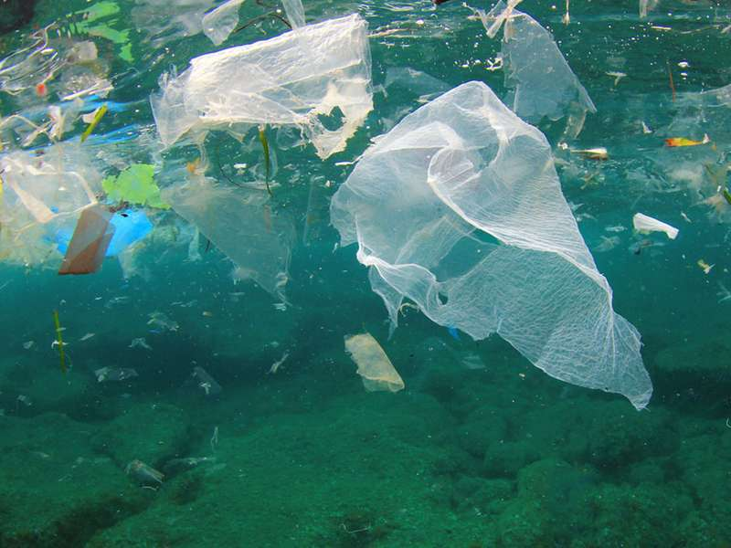
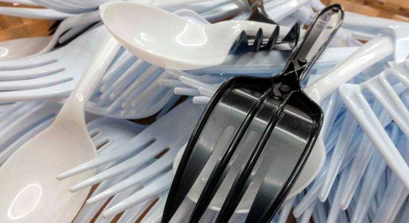
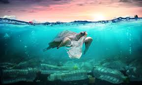
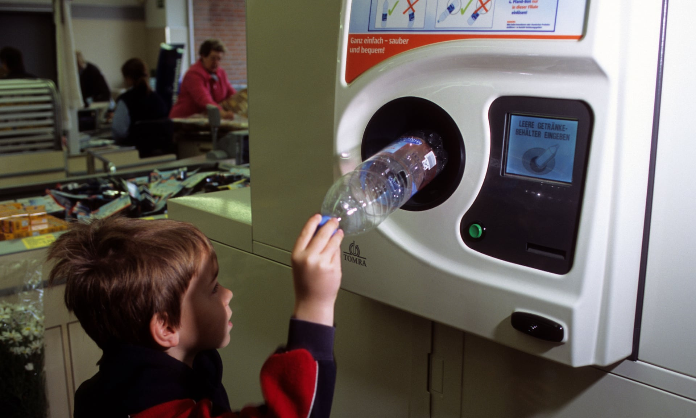

"It is just a piece of plastic, it won't cause harm." This is what a person would say when he leaves a plastic piece roaming around, being lazy to put it in a trash can. This is how billion people think and that piece of plastic becomes a ton of it, 300 million tons annually to be exact.

In our daily lives, plastic is one of the things we always use, it became a basic commodity. From the drinks, we take out from the restaurant to every single packaging on every stuff we buy, there will be always plastic. Plastic made our life practical, for now, but for the future if we continue producing and using plastic, especially if we use it only once, the life on Earth especially the marine animals.

8 million tons of plastic are dumped directly on our ocean causing 1 out of 3 marine species tangled with marine litters. 90% of the seabirds’ population have plastic in their stomach which is really dangerous to their health and to our biodiversity, as fishes and other marine animal is a major component to the food chain, without it other terrestrial species might also undergo extinction and human will lose its 16% of its protein which will lead to less quality of life.

With these drastic problems to come, plus the foul odor and ocean impossible to swim in, we need to solve this problem of plastic pollution. A major solution could be by having an alternative like a bayong or eco-bag to your grocery plastic bag and sticking with reusable silverware utensils rather than plastic utensils. Also, some European countries like Germany had started a project where you deposit your plastic bottles in exchange for money and if it will be implemented here in the Philippines, a lot will be encouraged to start recycling which will help in solving the problem.